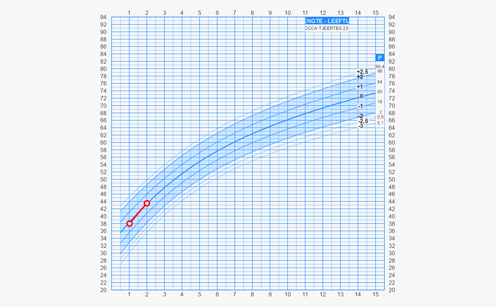

The function draw_chart() plots individual data on the growth chart.
Usage
draw_chart(
txt = "",
session = "",
format = "1.0",
chartcode = "",
selector = c("data", "derive", "chartcode"),
chartgrp = NULL,
agegrp = NULL,
sex = NULL,
etn = NULL,
ga = NULL,
side = "hgt",
curve_interpolation = TRUE,
quiet = FALSE,
dnr = "0-2",
lo = NULL,
hi = NULL,
nmatch = 0L,
exact_sex = TRUE,
exact_ga = FALSE,
break_ties = FALSE,
show_realized = FALSE,
show_future = FALSE,
draw_grob = TRUE,
loc = "",
bds_data = "",
ind_loc = "",
...
)Arguments
- txt
A JSON string, URL or file with the data in JSON format. The input data adhere to specification BDS JGZ 3.2.5, and are converted to JSON according to
schema.- session
OpenCPU session key with the uploaded data
- format
String. JSON data schema version number. There are currently three schemas supported:
"1.0","1.1","2.0"and"3.0". Formats"1.0"and"1.1"are included for backward compatibility only. Useformat = "3.0"for new applications.- chartcode
Optional. The code of the requested growth chart.
- selector
Either
"chartcode","data"or"derive". The function can calculate the chart code by looking at the child data (method"data") or user input (method"derive"). More in detail, the following behaviour decides between growth charts:"data"Calculate chart code from the individual data. This setting chooses the "optimal" chart for a given individual set of data.
"derive"Calculate chart code from a combination of user data:
chartgrp,agegrp,side,sex,etn,ga. The method does not use individual data. Use this setting when chart choice needs to be reactive on user input."chartcode"Take string specified in
chartcode
If there is a valid
tgtobject, then the function simply obeys theselectorsetting. If no validtgtobject is found, the"chartcode"argument is taken. However, if the"chartcode"is empty, then the function selects method"derive".- chartgrp
The chart group:
'nl2010','preterm','who','gsed1','gsed1pt'orcharacter(0)- agegrp
Either
'0-15m','0-4y','1-21y','0-21y'or'0-4ya'. Age group'0-4ya'provides the 0-4 chart with weight for age (design E).- sex
Either
'male'or'female'- etn
Either
'netherlands','turkish','moroccan'or'hindustani'- ga
Gestational age (in completed weeks)
- side
Either
'front','back','-hdc'or'both'- curve_interpolation
A logical indicating whether curve interpolation shoud be applied.
- quiet
Logical indicating whether chart code should be written to standard output. Default is
quiet = TRUE.- dnr
Donor data, Prediction horizon:
"0-2","2-4"or"4-18". May also be"smocc","lollypop","terneuzen"or"pops".- lo
Value of the left visit coded as string, e.g.
"4w"or"7.5m"- hi
Value of the right visit coded as string, e.g.
"4w"or"7.5m"- nmatch
Integer. Number of matches needed. When
nmatch == 0Lno matches are sought.- exact_sex
A logical indicating whether sex should be matched exactly
- exact_ga
A logical indicating whether gestational age should be matched exactly
- break_ties
A logical indicating whether ties should broken randomly. The default (
TRUE) breaks ties randomly.- show_realized
A logical indicating whether the realized growth of the target child should be drawn
- show_future
A logical indicating whether the predicted growth of the target child should be drawn
- draw_grob
Logical. Should chart be plotted on current device? Default is
TRUE. For internal use only.- loc
Alternative to
txt. Location where input data is uploaded. Argumentlocis deprecated and will disappear in Nov 2022; please usesessioninstead.- bds_data
Legacy. Will disappear in Nov 2022. Use
txtinstead.- ind_loc
Legacy. Will disappear in Nov 2022. Use
locinstead.- ...
Ignored
Examples
fn <- system.file("testdata", "client3.json", package = "james")
g <- draw_chart(txt = fn)

#> chartcode: PMAHN27